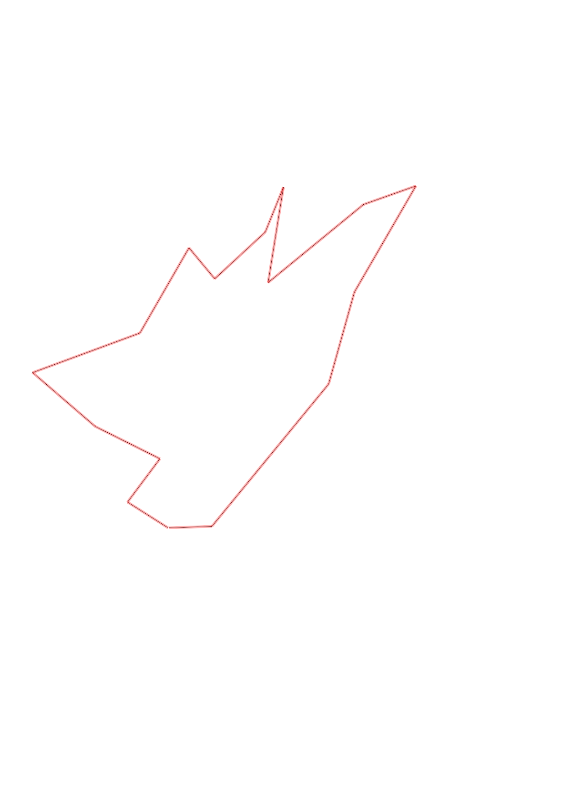
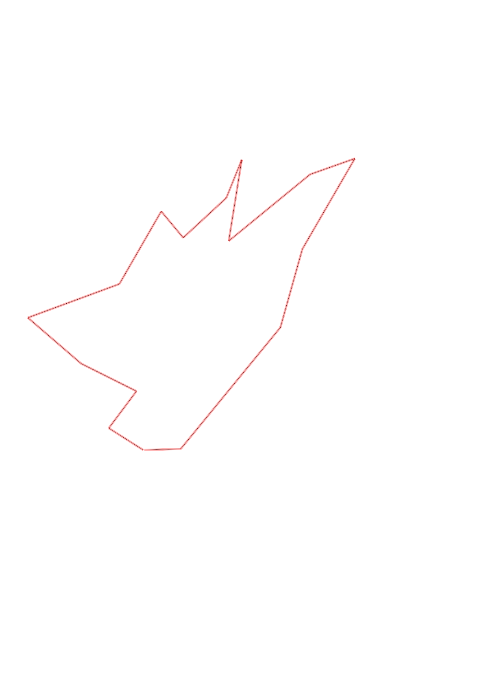

| Control |
Points |
Time Punched |
Distance |
Your Time |
Pace |
Place |
Fastest Time |
Median Time |
% Behind Fastest |
| 35 |
30 |
|
0.27 |
0:01:24 |
05:11 |
5 / 17 |
0:01:07 |
0:01:37 |
25% |
| 51 |
50 |
|
0.3 |
0:03:54 |
13:00 |
10 / 12 |
0:02:01 |
0:03:06 |
93% |
| 72 |
70 |
|
0.4 |
0:03:04 |
07:40 |
1 / 3 |
0:03:04 |
0:04:20 |
0% |
| 92 |
90 |
|
0.46 |
0:03:41 |
08:00 |
3 / 11 |
0:03:10 |
0:04:02 |
16% |
| 53 |
50 |
|
0.63 |
0:06:17 |
09:58 |
4 / 8 |
0:05:32 |
0:06:36 |
13% |
| 44 |
40 |
|
0.54 |
0:03:44 |
06:54 |
2 / 3 |
0:03:15 |
0:03:44 |
14% |
| 65 |
60 |
|
0.22 |
0:04:00 |
18:10 |
2 / 3 |
0:03:04 |
0:04:00 |
30% |
| 39 |
30 |
|
0.38 |
0:02:37 |
06:53 |
2 / 7 |
0:02:28 |
0:02:44 |
6% |
| 77 |
70 |
|
0.27 |
0:01:54 |
07:02 |
4 / 9 |
0:01:14 |
0:01:56 |
54% |
| 34 |
30 |
|
0.53 |
0:04:02 |
07:36 |
1 / 2 |
0:04:02 |
0:06:15 |
0% |
| 50 |
50 |
|
0.68 |
0:04:23 |
06:26 |
1 / 1 |
0:04:23 |
0:04:23 |
0% |
| 67 |
60 |
|
0.31 |
0:02:51 |
09:11 |
1 / 3 |
0:02:51 |
0:05:00 |
0% |
| 61 |
60 |
|
0.68 |
0:04:54 |
07:12 |
2 / 3 |
0:04:49 |
0:04:54 |
1% |
| 59 |
50 |
|
0.53 |
0:03:28 |
06:32 |
1 / 7 |
0:03:28 |
0:04:06 |
0% |
| 63 |
60 |
|
1.02 |
0:09:56 |
09:44 |
1 / 1 |
0:09:56 |
0:09:56 |
0% |
| Finish |
0 |
|
0.23 |
0:01:23 |
06:00 |
6 / 11 |
0:00:57 |
0:01:23 |
45% |
Total Distance Covered: 7.45km
Points Scored: 800
Late Penalty: -40
Final Score: 760
Total Time: 1hours 1minutes 32seconds
Efficiency: 102.01 points/km
 
